El agrupamiento (clustering) de los datos es una práctica dentro de la ciencia de datos que identifica grupos que contienen algún tipo de similitud.
El clustering tiene el objetivo de hacer predicciones acerca del grupo de pertenencia del dato.
La similitud entre datos es mide en términos de distancia, y los distintos métodos -en general- consiste en una propuesta de distancia diferente/propia.
clustering de particionado: subidivide a los datos en k grupos. Uno de los métodos más conocidos es k-means, por ejemplo.
clustering jerárquico: identifica grupos sin subidividir los datos.
La distancia euclidea es una medida de distancia entre dos puntos o vectores en un espacio bidimensional o multidimensional (euclidiano) basado en el teorema de Pitágoras:
\[ d_{euc}(x,y)=\sqrt{\sum_{i=1}^n (x_i-y_i)^2} \]
La distancia de Manhattan es un concepto que surgió con ocasión del diseño de calles de la ciudad de Manhattan. Esta distancia (a veces también llamada distancia de Taxicab) está relacionada con la distancia euclidiana, pero en lugar de calcular la trayectoria diagonal más corta (línea recta) entre dos puntos, calcula la distancia diagonal pero respectando un trazado cuadricular, escalonado:
\[ \left(\sum_{i=1}^n |x_i-y_i|^p\right)^{1/p} \]
Vimos que una manera de encontrar similitudes es calculando la distancia entre datos. Otra manera de saber cuán similares son dos datos es a través de la correlación entre ellos: los datos están correlados, decimos que son similares. Se pueden usar diferentes tipos de métodos de correlación, tales como:
La correlación de Pearson mide el grado de una relación lineal entre dos dataset que siguen una distribución normal. Un valor de 1 representa una perfecta correlación positiva, -1 es perfecta correlación negativa y 0 indica ausencia de correlación:
\[ \rho = \frac{\text{cov}(X,Y)}{\sigma_x \sigma_y} \]
Donde:
\[ \text{cov}(X,Y) = \sum_{i=1}^{n} (x_i - \bar{x})(y_i - \bar{y})\quad \text{(covarianza)} \\ \sigma{_x}^{2} = \sum_{i=1}^{n} (x_i - \bar{x})^2\quad \text{(varianza)} \]
Entonces:
\[ d_{cor}(x,y)=1−{\frac{\sum_{i=1}^{n} (x_i - \bar{x})(y_i - \bar{y})\quad} {\sqrt{\sum_{i=1}^{n} (x_i - \bar{x})^2\quad \sum_{i=1}^{n} (y_i - \bar{y})^2\quad}}} \]
Esta distancia mide la correlación entre el rango de x y el rango de y. Se conoce como coeficiente \(\rho\) (rho). Se puede considerar que es la distancia de Pearson pero aplicado a los rangos. Es útil cuando los datos no siguen una distribución normal y que tienen una relación lineal.
\[ d_{spear}(x,y)=1−{\frac{\sum_{i=1}^{n} (x_i' - \bar{x}')(y_i' - \bar{y}')\quad} {\sqrt{\sum_{i=1}^{n} (x_i' - \bar{x}')^2\quad \sum_{i=1}^{n} (y_i' - \bar{y}')^2\quad}}} \]
Donde:
El estadístico \(\rho\) viene dado por la expresión:
\[ \rho = 1- {\frac {6 \sum d_i^2}{n(n^2 - 1)}} \]
donde \(d\) es la distancia pareada de los rangos de las variables \(x_i\) e \(y_i\). Y \(n\) es el número de muestras.
Para muestras mayores a 20 observaciones, el resultado se puede aproximar con una distribución t Student.
La correcta elección del método de distancia tiene una gran influencia en los resultados del clustering. De manera habitual, la medida de distancia más utilizada es la distancia euclidiana.
Compartimos, a continuación, algunas consideraciones que pueden ser útiles a la hora de elegir el método de similitud:
La correlación de Pearson es el método de clustering más utilizado. También se conoce como una correlación paramétrica que depende de la distribución de los datos.
La correlación de Spearman es un método no paramétrico y se utiliza para analizar correlaciones de rangos.
La correlación de Pearson es muy sensible a los outliers. Cuando la muestra tiene outliers, la correlación de Spearman se comporta mejor.
El coeficiente de correlación de Spearman es menos sensible que el de Pearson para valores que están lejos de lo esperado.
Para hacer clustering de un dataset es fundamental:
que los datos estén completos. Si hay valores ´NA´habrá que decidir si eliminar la fila, la columna, o completas los datos (con la media, o la mediana, por ejemplo).
que los datos estén estandarizados. Es decir: los datos deben ser comparables entre sí. En estadística los datos están estandarizados cuando la media es 0 y el desvío estandard 1.
Estandarización: Las distancias están relacionadas con la escala de los datos. Para que las comparaciones sean válidas, los datos deben estar estandarizados (o escalados). Esta necesidad se ve clara, por ejemplo, cuando se utilizan unidades de medidas como los kg, cm, litro, etc. Una fórmula típica de estandarízación es:
\[ \frac{x_i -centro(x)}{escala(x)} \]
Donde:
\(centro(x)\) puede ser la media o la mediana de x.
\(escala(x)\) puede ser el desvío estandard de x, el rango intercuantil, entre otros.
Hands-on sobre preparación de los datos
Vamos a utilizar el dataset USArrests que contiene estadísticas de arrestos por cada 100,000 residentes por robo, asesinato y violación en cada uno de los 50 estados de USA en 1973. Incluye también el porcentaje de la población que vive en áreas urbanas:
data("USArrests")
df <- USArrests # Usaremos usaremos un nombre más cortodf <- na.omit(df)Nosotros no queremos que los algoritmos de clustering dependan de la unidad de valores que utiliza nuestro dataset. Por ese motivo, vamos a scalar/estandarizar los datos:
df_standardized <- scale(df)
head(df, n = 3)## Murder Assault UrbanPop Rape
## Alabama 13.2 236 58 21.2
## Alaska 10.0 263 48 44.5
## Arizona 8.1 294 80 31.0head(df_standardized, n = 3)## Murder Assault UrbanPop Rape
## Alabama 1.24256408 0.7828393 -0.5209066 -0.003416473
## Alaska 0.50786248 1.1068225 -1.2117642 2.484202941
## Arizona 0.07163341 1.4788032 0.9989801 1.042878388Nota: Si vemos los tres primeros datos de cada matriz (de df y de df_standarized) veremos que las proporciones entre los datos de una misma columna son las mismas.
La función scale() siempre estandariza entre filas de una misma columna.
if (!"cluster" %in% rownames(installed.packages()))
install.packages("cluster")
if (!"factoextra" %in% rownames(installed.packages()))
install.packages("factoextra")
library(ggplot2)
library(cluster)
library(factoextra)## Welcome! Want to learn more? See two factoextra-related books at https://goo.gl/ve3WBaVamos a utilizar la distancia euclidea a nuestros datos:
dist.eucl <- dist(df_standardized, method = "euclidean")
dist.eucl.matrix<-as.matrix(dist.eucl) # esta matriz contiene todas las distancias
dist.eucl.matrix<-round(dist.eucl.matrix,2) # redondeamos para facilitar el trabajo
head(dist.eucl.matrix[1:3,1:8])## Alabama Alaska Arizona Arkansas California Colorado Connecticut Delaware
## Alabama 0.00 2.7 2.29 1.29 3.26 2.65 3.22 2.02
## Alaska 2.70 0.0 2.70 2.83 3.01 2.33 4.74 3.62
## Arizona 2.29 2.7 0.00 2.72 1.31 1.37 3.26 1.91fviz_dist(dist.eucl, gradient = list(low = "#00AFBB", mid = "white", high = "#FC4E07"))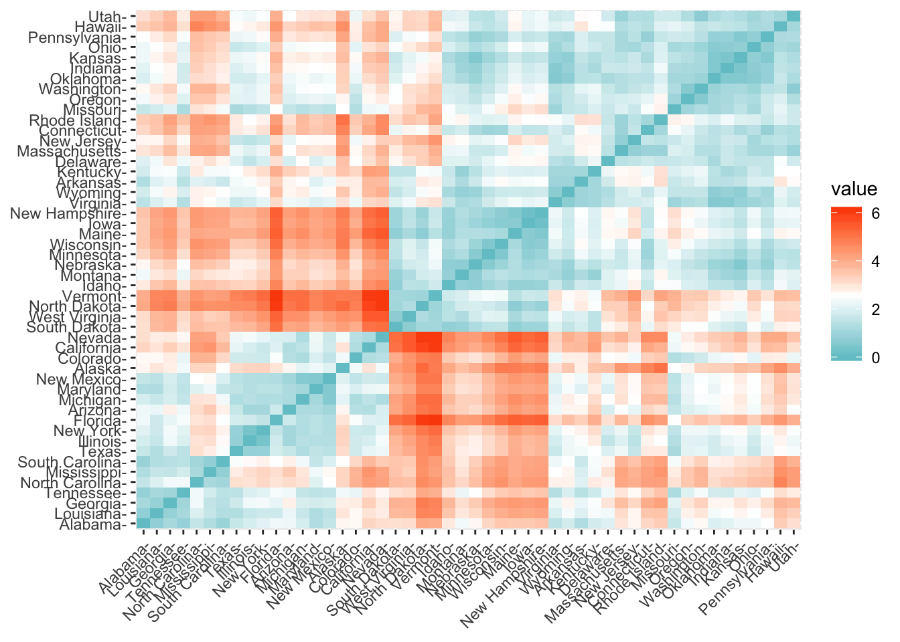
También podemos calcular la matriz de correlación de los datos. Nosotros vamos a utilizar el método de Pearson:
# Compute
library("factoextra")
dist.cor <- get_dist(df_standardized, method = "pearson")
# Display a subset
dist.cor.matrix<-round(as.matrix(dist.cor), 2)
head(dist.cor.matrix[1:3,1:8])## Alabama Alaska Arizona Arkansas California Colorado Connecticut Delaware
## Alabama 0.00 0.71 1.45 0.09 1.87 1.69 1.71 1.14
## Alaska 0.71 0.00 0.83 0.37 0.81 0.52 1.86 1.48
## Arizona 1.45 0.83 0.00 1.18 0.29 0.60 0.78 0.34fviz_dist(dist.cor)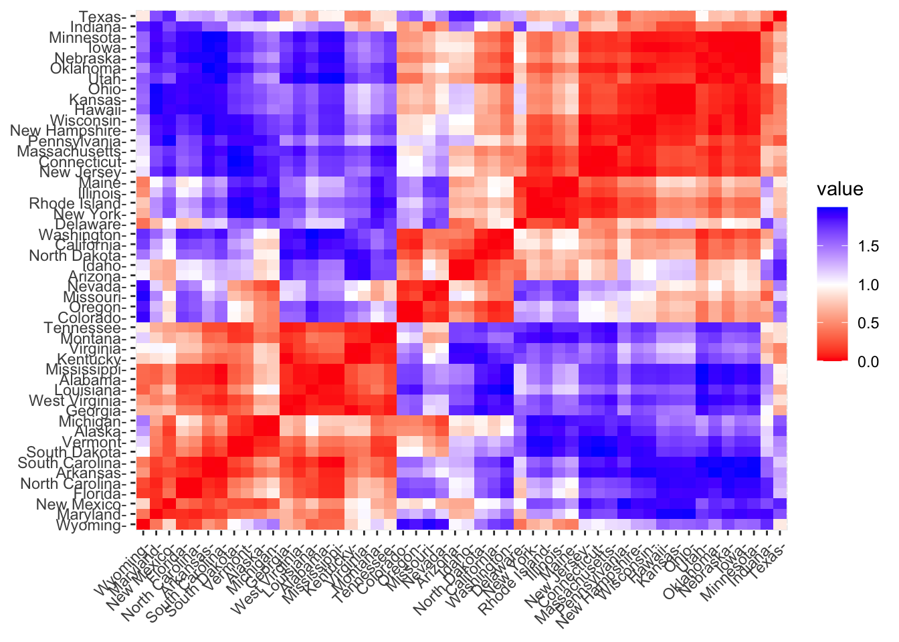
Conceptos básicos
La idea básica detrás de la agrupación de k-means consiste en definir grupos de modo que la variación de distancias dentro de cada grupo (conocida como total within-cluster variation) sea mínima.
Hay varios algoritmos de k-means disponibles. El algoritmo estándar es el algoritmo Hartigan-Wong (Hartigan y Wong 1979), que define la variación total dentro del grupo como la suma de las distancias cuadradas de las distancias euclidianas entre los elementos y el centroide correspondiente:
\[ W(C_k)=\sum_{x_i \in C_k}^{} (x_i - \mu_k)^2 \]
Donde:
\(x_i\) es un punto que pertenece al cluster \(C_k\).
\(\mu_k\) es el valor medio de los puntos del cluster \(C_k\).
Cada observación (\(x_i\)) se asigna a un grupo dado de tal manera que la distancia de la suma de los cuadrados de la observación a sus centros de grupo asignados \(\mu_k\) es un mínimo.
Definimos la variación total dentro del cluster de la siguiente manera:
\[ total within-cluster=\sum_{k=1}^{k}W(C_k)=\sum_{k=1}^{k}\sum_{x_i \in C_k}^{} (x_i - \mu_k)^2 \]
El algoritmo de K-means se puede resumir en los siguientes pasos:
Se especifica el número de grupos (K) que se crearán (dato señalado por el analista).
Seleccionar aleatoriamente k objetos del conjunto de datos como los centros o medios iniciales del grupo. A estos objetos se los llamada centroides.
Asignar cada observación a su centroide más cercano, basándose en la distancia euclidiana entre el objeto y el centroide.
Para cada uno de los k clusters, actualizar el centroide del cluster calculando los nuevos valores medios de todos los puntos de datos en el cluster.
Minimizar iterativamente el total dentro de la suma de cuadrados. Es decir, repetir los pasos 3 y 4 hasta que las asignaciones de clúster dejen de cambiar o se alcance el número máximo de iteraciones. De forma predeterminada, R utiliza 10 como valor predeterminado para el número máximo de iteraciones.
Estimación del k óptimo
Se puede hallar el óptimo número K para los datos a través de la función fviz_nbclust(). Veamos un ejemplo con el mismo set de datos:
library(cluster)
library(factoextra)
# recordemos que df_standardized es el dataset estandarizado
factoextra::fviz_nbclust(df_standardized, kmeans, method = "gap_stat")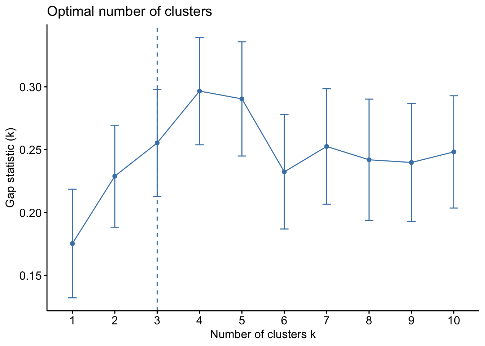
El número óptimo de grupo que sugiere fviz_nbclust() es 3. Es decir, K=3.
set.seed(123) # setear la semilla para que siempre los resultados sean iguales
km.res <- kmeans(df_standardized, 3, nstart = 25)
# visualización
fviz_cluster(km.res, data = df_standardized, palette = "jco",
ggtheme = theme_minimal(), star.plot = TRUE, repel = TRUE)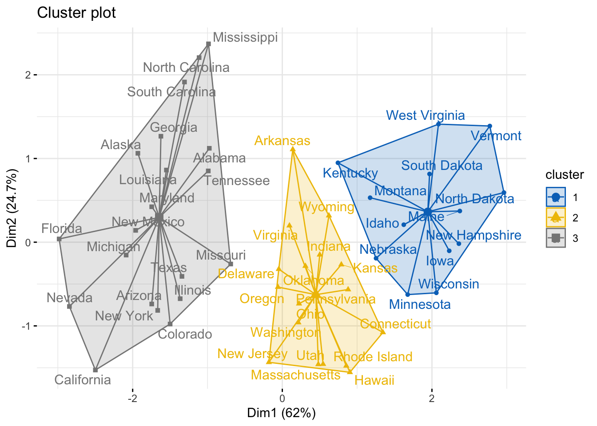
Nota: en kmeans() hemos utilizado el parámetro nstart = 25. Esto significa que R calculará 25 veces variación de distancia dentro de cada grupo, y se quedará con el menor valor. El valor predeterminado de nstart en R es uno. Sin embargo, se recomienda encarecidamente calcular k-means clustering con un gran valor de nstart como 25 o 50, para obtener un resultado más estable.
Observe, en el gráfico, que cada grupo tiene señalado sus centrómero (un triángulo, un círculo y un cuadrado más grande que el resto).
km.res:print(km.res)## K-means clustering with 3 clusters of sizes 20, 13, 17
##
## Cluster means:
## Murder Assault UrbanPop Rape
## 1 1.0049340 1.0138274 0.1975853 0.8469650
## 2 -0.9615407 -1.1066010 -0.9301069 -0.9667633
## 3 -0.4469795 -0.3465138 0.4788049 -0.2571398
##
## Clustering vector:
## Alabama Alaska Arizona Arkansas California Colorado
## 1 1 1 3 1 1
## Connecticut Delaware Florida Georgia Hawaii Idaho
## 3 3 1 1 3 2
## Illinois Indiana Iowa Kansas Kentucky Louisiana
## 1 3 2 3 2 1
## Maine Maryland Massachusetts Michigan Minnesota Mississippi
## 2 1 3 1 2 1
## Missouri Montana Nebraska Nevada New Hampshire New Jersey
## 1 2 2 1 2 3
## New Mexico New York North Carolina North Dakota Ohio Oklahoma
## 1 1 1 2 3 3
## Oregon Pennsylvania Rhode Island South Carolina South Dakota Tennessee
## 3 3 3 1 2 1
## Texas Utah Vermont Virginia Washington West Virginia
## 1 3 2 3 3 2
## Wisconsin Wyoming
## 2 3
##
## Within cluster sum of squares by cluster:
## [1] 46.74796 11.95246 19.62285
## (between_SS / total_SS = 60.0 %)
##
## Available components:
##
## [1] "cluster" "centers" "totss" "withinss" "tot.withinss" "betweenss"
## [7] "size" "iter" "ifault"km.res$cluster[km.res$cluster==2]## Idaho Iowa Kentucky Maine Minnesota Montana Nebraska
## 2 2 2 2 2 2 2
## New Hampshire North Dakota South Dakota Vermont West Virginia Wisconsin
## 2 2 2 2 2 2aggregate(df, by=list(cluster=km.res$cluster), mean)## cluster Murder Assault UrbanPop Rape
## 1 1 12.165000 255.25000 68.40000 29.16500
## 2 2 3.600000 78.53846 52.07692 12.17692
## 3 3 5.841176 141.88235 72.47059 18.82353Ejemplo de interprestación de la matriz anterior: Los habitantes del grupo 1 tienen una media de asesinatos (Murder) de 3.6, mientras que los habitantes del grupo 2 tiene una media de 5.83 y los de grupos 3 una media de 12.16 asesinatos por 1000 habitantes.
cluster=4:set.seed(123) # setear la semilla para que siempre los resultados sean iguales
km.res <- kmeans(df_standardized, 4, nstart = 25)
# visualización
fviz_cluster(km.res, data = df_standardized, palette = "jco",
ggtheme = theme_minimal(), star.plot = TRUE, repel = TRUE)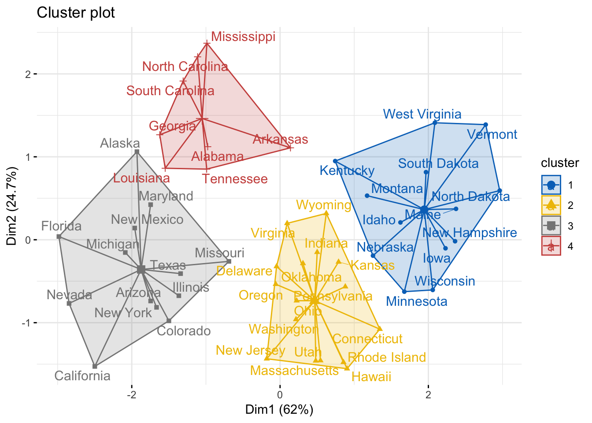
La visualización de los grupos es una herramienta para el ajuste del número de grupos. La función
fviz_nbclustes una buena herramienta pero puede suceder que, según el criterio del analista, convenga otro número para k.
Ventajas y desventajas
K-means es uno de los métodos de clustering más utilizados. Destaca por la sencillez y velocidad de su algoritmo, sin embargo, presenta una serie de limitaciones que se deben tener en cuenta.
Requiere que se indique de antemano el número de clusters que se van a crear. Esto puede ser complicado si no se dispone de información adicional sobre los datos con los que se trabaja.
Las agrupaciones resultantes pueden variar dependiendo de la asignación aleatoria inicial de los centroides. Para minimizar este problema se recomienda repetir el proceso de clustering entre 25-50 veces y seleccionar como resultado definitivo el que tenga menor suma total de varianza interna.
Presenta problemas de robustez frente a outliers. La única solución es excluirlos o recurrir a otros métodos de clustering más robustos como K-medoids (PAM).
K-medoids es un método de clustering muy similar a K-means en cuanto a que ambos agrupan las observaciones en K clusters, donde K es un valor preestablecido por el analista. La diferencia es que, en K-medoids, cada cluster está representado por una observación presente en el cluster (medoid), mientras que en K-means cada cluster está representado por su centroide, que se corresponde con el promedio de todas las observaciones del cluster pero con ninguna en particular.
medoid: elemento dentro de un cluster cuya distancia (diferencia) promedio entre él y todos los demás elementos del mismo cluster es lo menor posible. Este elemento se puede considerar como el más representativo del grupo.
El algoritmo más empleado para aplicar K-medoids se conoce como PAM (Partitioning Around Medoids).
pam.res <- pam(df_standardized, 4, metric = "manhattan")
fviz_cluster(pam.res, geom = c("point", "text"), ellipse.type = "t", ggtheme = theme_minimal(), show.clust.cent = TRUE, labelsize = 8, star.plot = TRUE, repel = TRUE)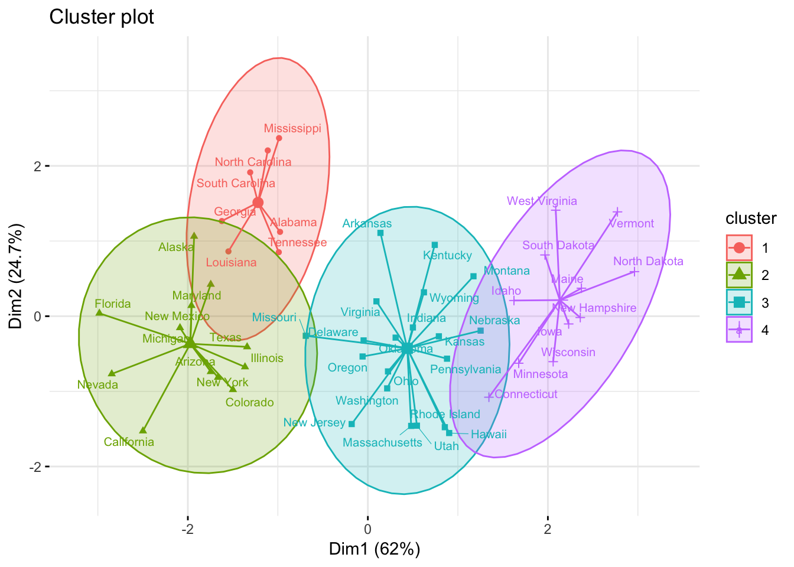
Los métodos de clustering descritos hasta ahora (K-means, K-medoids) asignan cada observación únicamente a un cluster, de ahí que también se conozcan como hard clustering. Los métodos de fuzzy clustering o soft clustering se caracterizan porque, cada observación, puede pertenecer potencialmente a varios clusters, en concreto, cada observación tiene asignado un grado de pertenencia a cada uno de los cluster. Fuzzy c-means (FCM) es uno de los algoritmos más empleado para generar fuzzy clustering.
Aplicación de FCM a los datos de USArrests:
library(cluster)
fuzzy_cluster <- fanny(x = df_standardized, diss = FALSE, k = 3, metric = "euclidean",
stand = FALSE)
head(fuzzy_cluster$membership)## [,1] [,2] [,3]
## Alabama 0.4676004 0.3144516 0.2179480
## Alaska 0.4278809 0.3178707 0.2542484
## Arizona 0.5092197 0.2945668 0.1962135
## Arkansas 0.2934077 0.3787718 0.3278205
## California 0.4668527 0.3084149 0.2247324
## Colorado 0.4542018 0.3236683 0.2221299Esto significa que el estado de Alabama tiene un 46 % de ser asociado al cluster 1, un 31 % al cluster 2 y un 21 % al cluster 3.
Visualización de los datos:
library(factoextra)
fviz_cluster(object = fuzzy_cluster, repel = TRUE, ellipse.type = "norm",
pallete = "jco") + theme_bw() + labs(title = "Fuzzy Cluster plot")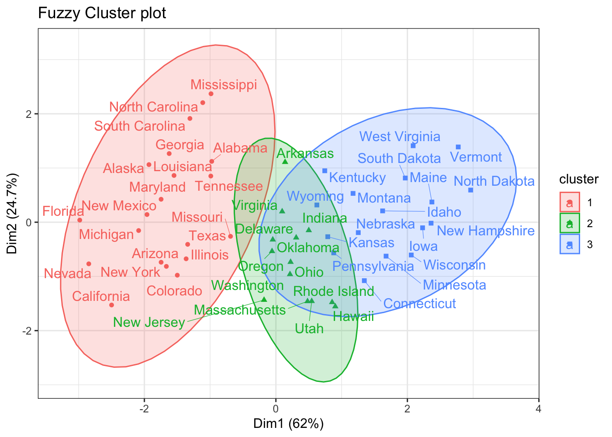
Los métodos de clustering tienen la propiedad de encontrar agrupaciones en cualquier set de datos, independientemente de que realmente existan o no dichos grupos. La validación de clusters es el proceso por el cual se evalúa la veracidad de los grupos obtenidos. Para facilitar la validación, explicaremos brevemente dos aspectos a tener en cuenta: estudio de la tendencia de clustering y estudio de la calidad.
Antes de aplicar un método de clustering a los datos es conveniente evaluar si hay indicios de que realmente existe algún tipo de agrupación en ellos. A este proceso se le conoce como assessing cluster tendecy y puede llevarse a cabo mediante test estadísticos (Estadístico de Hopkins) o de forma visual (Visual Assessment of cluster Tendency).
Para ilustrar la importancia de este pre-análisis inicial, se aplica clustering a dos sets de datos, uno que sí contiene grupos reales (iris) y otro aleatoriamente simulado que no.
library(purrr)
# Se elimina la columna que contiene la especie de planta
datos_iris <- iris[, -5]
# Se generan valores aleatorios dentro del rango de cada variable. Se utiliza la
# función map del paquete purrr.
datos_simulados <- map_df(datos_iris,
.f = function(x){runif(n = length(x),
min = min(x),
max = max(x))
}
)
# Estandarización de los datos
datos_iris <- scale(datos_iris)
datos_simulados <- scale(datos_simulados)Una representación gráfica permite comprobar que el set de datos iris sí contiene grupos reales, mientras que los datos simulados no. Al haber más de dos variables es necesario reducir la dimensionalidad mediante un Principal Component Analysis (método que explicaremos más adelante).
library(factoextra)
library(ggpubr)
pca_datos_iris <- prcomp(datos_iris)
pca_datos_simulados <- prcomp(datos_simulados)
p1 <- fviz_pca_ind(X = pca_datos_iris, habillage = iris$Species,
geom = "point", title = "PCA - datos iris",
pallete = "jco") +
theme_bw() + theme(legend.position = "bottom")
p2 <- fviz_pca_ind(X = pca_datos_simulados, geom = "point",
title = "PCA - datos simulados", pallete = "jco") +
theme_bw() + theme(legend.position = "bottom")
ggarrange(p1, p2, common.legend = TRUE)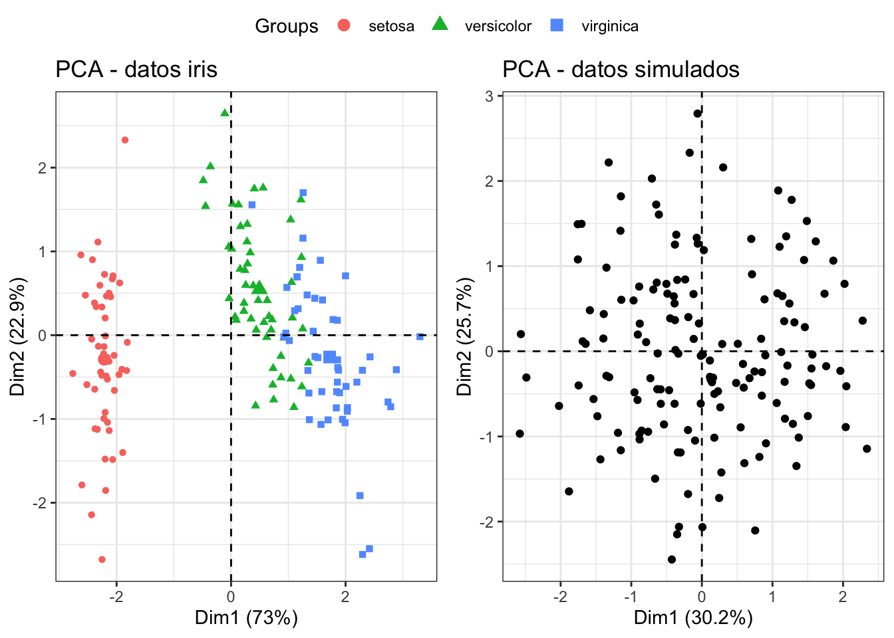
Véase que ocurre cuando se aplican métodos de clustering a estos dos sets de datos.
# K-means clustering
km_datos_iris <- kmeans(x = datos_iris, centers = 3)
p1 <- fviz_cluster(object = km_datos_iris, data = datos_iris,
ellipse.type = "norm", geom = "point", main = "Datos iris",
stand = FALSE, palette = "jco") +
theme_bw() + theme(legend.position = "none")
km_datos_simulados <- kmeans(x = datos_simulados, centers = 3)
p2 <- fviz_cluster(object = km_datos_simulados, data = datos_simulados,
ellipse.type = "norm", geom = "point",
main = "Datos simulados", stand = FALSE, palette = "jco") +
theme_bw() + theme(legend.position = "none")
# Hierarchical clustering
p3 <- fviz_dend(x = hclust(dist(datos_iris)), k = 3, k_colors = "jco",
show_labels = FALSE, main = "Datos iris")
p4 <- fviz_dend(x = hclust(dist(datos_simulados)), k = 3, k_colors = "jco",
show_labels = FALSE, main = "Datos simulados")
ggarrange(p1, p2)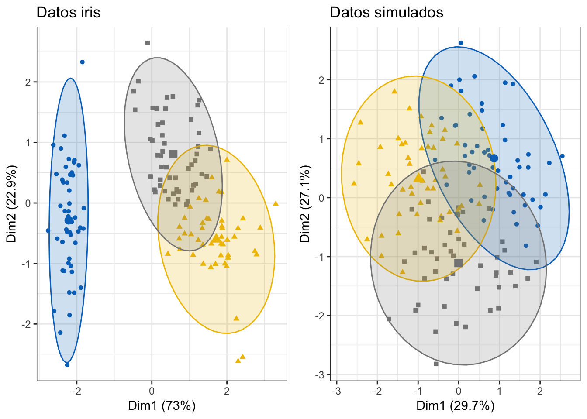
ggarrange(p3, p4)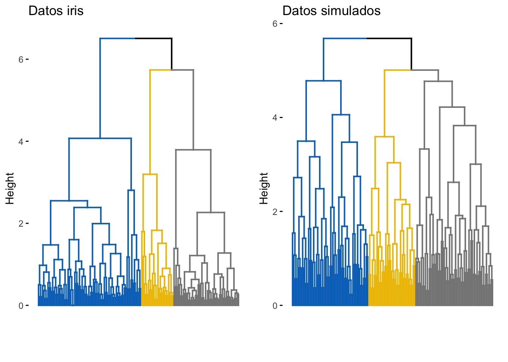
Ambos métodos de clustering crean agrupaciones en el set de datos simulado. De no analizarse con detenimiento, podrían darse por válidos estos grupos aun cuando realmente no existen. A continuación, se muestran dos métodos que ayudan a identificar casos como este y prevenir la utilización de clustering en escenarios en los que no tiene sentido hacerlo.
Estadístico de Hopkins
El estadístico Hopkins permite evaluar la tendencia de clustering de un conjunto de datos mediante el cálculo de la probabilidad de que dichos datos procedan de una distribución uniforme, es decir, estudia la distribución espacial aleatoria de las observaciones.
# datos_iris <- iris[, -5]
# datos_simulados <- map_df(datos_iris,
# .f = function(x){runif(n = length(x), min = min(x), max = max(x))})
if (!"clustertend" %in% rownames(installed.packages()))
install.packages("clustertend")
library(clustertend)
set.seed(321)
# Estadístico H para el set de datos iris
hopkins(data = datos_iris, n = nrow(datos_iris) - 1)## $H
## [1] 0.1842089# Estadístico H para el set de datos simulado
hopkins(data = datos_simulados, n = nrow(datos_simulados) - 1)## $H
## [1] 0.5198121El set de datos iris no sigue una distribución espacial uniforme, su estructura contiene algún tipo de agrupación. Por contra, el valor del estadístico H obtenido para el set de datos simulado es muy próximo a 0.5, lo que indica que los datos están uniformemente distribuidos y desaconseja la utilización de métodos de clustering.
La calidad de los clusters se puede analizar desde tres tipos de estadísticos:
Validación interna de los clusters: Emplean únicamente información interna del proceso de clustering. Se trata de un proceso totalmente unsupervised.
Validación externa de los clusters (ground truth): Combinan los resultados del clustering (unsupervised) con información externa (supervised), como puede ser un set de validación en el que se conoce el verdadero grupo al que pertenece cada observación.
Significancia de los clusters: Calculan la probabilidad (p-value) de que los clusters generados se deban únicamente al azar.
Validación interna:
El clustering agrupa observaciones de forma que sean similares a aquellas que están dentro de un mismo cluster, es decir, que la homogeneidad (también llamada compactness o cohesion) se lo mayor posible a la vez que lo es la separación entre clusters. Cuantificar estas dos características es una forma de evaluar cómo de bueno es el resultado obtenido.
Dado que la homogeneidad y la separación siguen tendencias opuestas (a mayor número de clusters la homogeneidad aumenta, pero la separación disminuye), algunos índices combinan ambas medidas, dos de ellos son: el silhouette width y el índice Dunn.
Silhouette width: Cuantifica cómo de buena es la asignación que se ha hecho de una observación comparando su similitud con el resto de observaciones del mismo cluster frente a las de los otros clusters. Su valor puede estar entre -1 y 1, siendo valores altos un indicativo de que la observación se ha asignado al cluster correcto. Cuando su valor es próximo a cero significa que la observación se encuentra en un punto intermedio entre dos clusters. El uso combinado de las funciones eclust() y fviz_silhouette() del paquete factoextra() permiten obtener los coeficientes silhouette de forma sencilla:
library(factoextra)
# Se emplean los datos iris excluyendo la variable Species
datos <- scale(iris[, -5])
km_clusters <- eclust(x = datos, FUNcluster = "kmeans", k = 3, seed = 123,
hc_metric = "euclidean", nstart = 50, graph = FALSE)
fviz_silhouette(sil.obj = km_clusters, print.summary = TRUE, palette = "jco",
ggtheme = theme_classic())## cluster size ave.sil.width
## 1 1 50 0.64
## 2 2 53 0.39
## 3 3 47 0.35
La función eclust() almacena, además de la información devuelta por la función de clustering empleada, en este caso kmeans, información sobre los coeficientes silhouette individuales y por cluster, el cluster al que se ha asignado cada observación y el cluster vecino más próximo (el segundo mejor candidato).
# Media silhouette por cluster
km_clusters$silinfo$clus.avg.widths## [1] 0.6363162 0.3933772 0.3473922# Coeficiente silhouette para cada observación
head(km_clusters$silinfo$widths)## cluster neighbor sil_width
## 1 1 2 0.7341949
## 41 1 2 0.7333345
## 8 1 2 0.7308169
## 18 1 2 0.7287522
## 5 1 2 0.7284741
## 40 1 2 0.7247047El cluster número 2 (amarillo) tiene observaciones con valores de silhouette próximos a 0 e incluso negativos, lo que indica que esas observaciones podrían estar mal clasificadas. Viendo la representación gráfica del clustering, cabe esperar que sean observaciones que están situadas en la frontera entre los clusters 2 y 3 ya que solapan.
Véase cómo cambia el resultado si en lugar de 3 clusters (número correcto de especies), se crean 5.
library(ggpubr)
km_clusters <- eclust(x = datos, FUNcluster = "kmeans", k = 5, seed = 123,
hc_metric = "euclidean", nstart = 50, graph = FALSE)
p1 <- fviz_cluster(object = km_clusters, geom = "point", ellipse.type = "norm",
palette = "jco") +
theme_classic() + theme(legend.position = "none")
p2 <- fviz_silhouette(sil.obj = km_clusters, print.summary = FALSE,
palette = "jco", ggtheme = theme_classic()) +
theme(legend.position = "none")
ggarrange(p1, p2)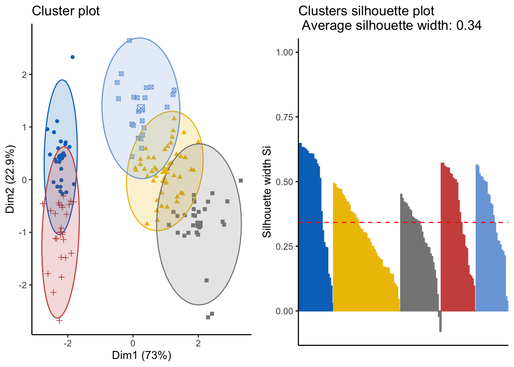
El clustering de datos, en general, está basado en un cálculo de distancias. La similitud entre dos datos datos es la distancia entre dos puntos. Hemos visto que el método K-means agrupa puntos (x,y) a grupos según la distancia del mismo respecto a un centrómero. En la ciencia de datos, habitualmente los datos son multivariados. Es decir: un dato no son dos variables (x,y) sino muchas.
Existe un método que transforma un dato multivariado a un punto de dos variables. El criterio de transformación está basado en que ambos universo de datos debe respetar el mismo patrón de distancia entre datos. Por ejemplo: suponga que un dato tiene cuatro variables: \(X_1,X_2,X_3,X_4\), y \(f(X)\) es la transformación tal que \(f(X)=(Y_1,Y_2)\) donde \(Y\) es el dato transformado, entonces la \(d(X_1,X_2,X_3,X_4)=d(Y_1,Y_2)\).
Principal Component Analysis es un método estadístico que permite simplificar la complejidad de espacios muestrales con muchas dimensiones a la vez que conserva su información. Es la función de transformación \(f(X)\). La compactación de dimensiones no debe ser, necesariamente, a dos variables. Sólo se requiere que sea menor a la dimensión original.
Es un método que se suele utilizar previo al clustering a la regresión.
A pesar de las muy buenas propiedades que tiene el PCA, sufre de algunas limitaciones, por ejemplo, solo tiene en cuenta combinaciones lineales de las variables originales. En determinados escenarios, el no poder considerar otro tipo de combinaciones supone perder mucha información.
Para conocer el funcionamiento del algoritmos de PCA recomendamos leer este hands-on.
El resultado de este tipo de clustering es un árbol.
res.hc <- hclust(dist.eucl, method = "ward.D2")
fviz_dend(res.hc, cex = 0.5, k = 4, palette = "jco") 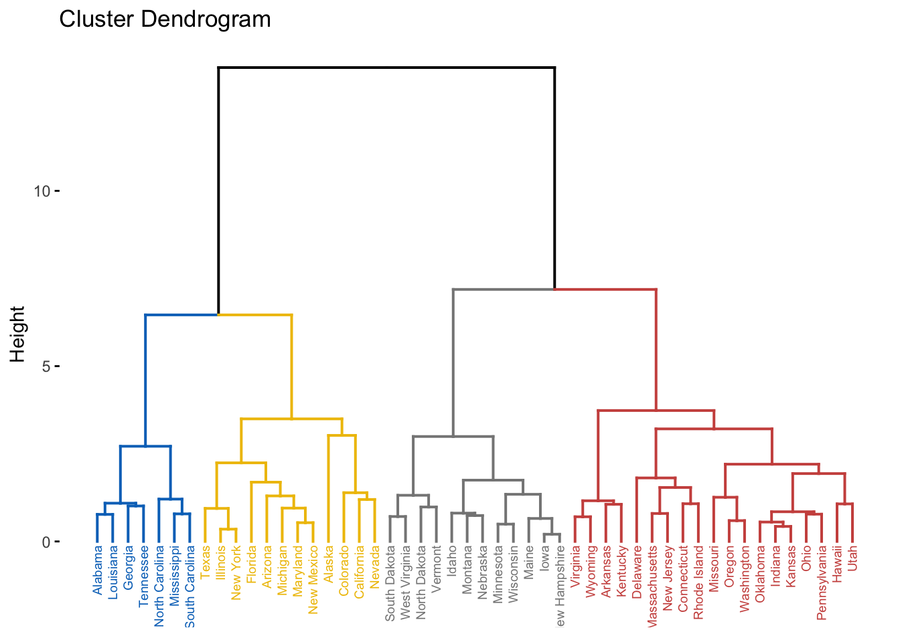
Es posible establecer grupos y manejarlos de manera independiente. Por ejemplo:
clus4 = cutree(res.hc, 4) # establecemos 4 clusters
which(clus4==1) # nos quedamos con los estados del 1º cluster## Alabama Georgia Louisiana Mississippi North Carolina South Carolina
## 1 10 18 24 33 40
## Tennessee
## 42Se puede visualizar el corte en el dendograma con una línea:
plot(res.hc, hang = -1, cex = 0.6)
abline(h = 4, lty = 2) # dibujar la línea en la altura 4. 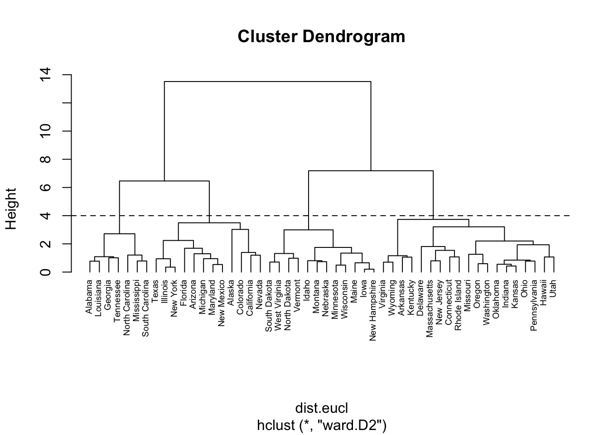
Hemos comentado que el método K-means tiene la desventaja que requiere la definición del número de clusters. Esta limitación se puede contrarrestar combinandolo con un dendrograma: 1º graficar un dendograma, 2º cortar el árbol a la altura que, visualmente se considere conveniente, 3º utilizar esa altura como K para el método k-means.
Los mapas de calor son otro modo muy completo de ver agrupamientos jerárquicos.
En los mapas de calor, generalmente, las columnas son muestras y las filas son variables. Por lo tanto, comenzamos por transponer los datos antes de crear el mapa de calor.
if (!"pheatmap" %in% rownames(installed.packages()))
install.packages("pheatmap")
library(pheatmap)
pheatmap(t(df_standardized), cutree_cols = 4)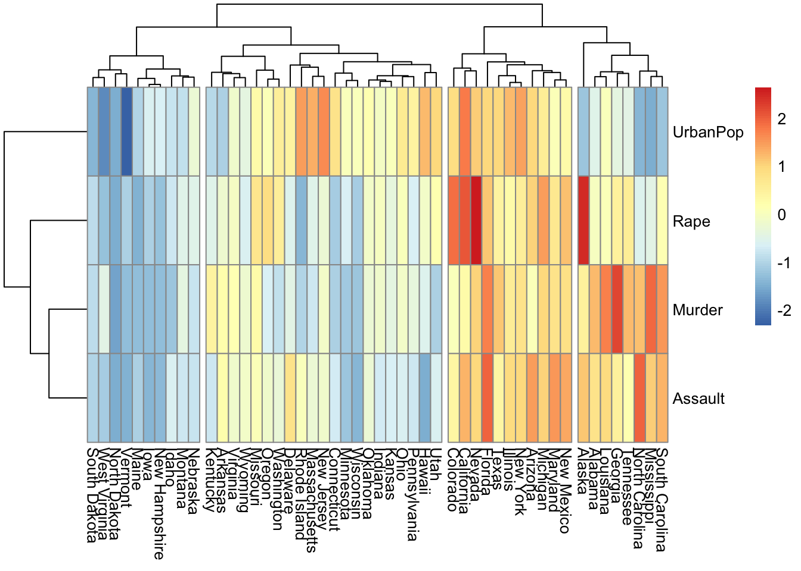
Bibliografía recomendada: